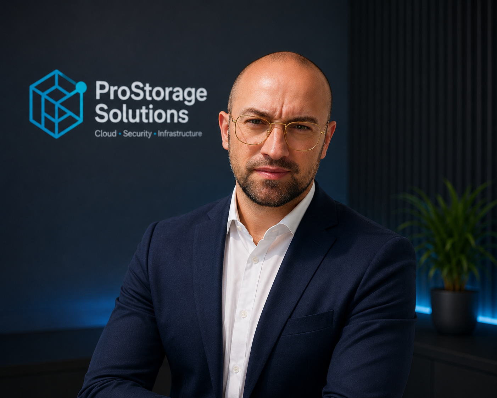

ProStorage Solutions nace para ayudar a pequeñas y medianas empresas a modernizar su infraestructura IT con soluciones seguras, claras y adaptadas a sus necesidades reales.

ProStorage Solutions está impulsado por Javier Cuenca Pérez, profesional especializado en administración de sistemas, cloud, seguridad e infraestructura IT.
Mi enfoque se basa en crear soluciones prácticas, documentadas y orientadas a pequeñas y medianas empresas que necesitan tecnología fiable sin complicaciones innecesarias.
Certificaciones obtenidas:
Experiencia en infraestructura cloud, redes, seguridad, almacenamiento, máquinas virtuales y automatización.
Formación orientada a sistemas, redes, virtualización, almacenamiento, seguridad y servicios empresariales.
Experiencia práctica en entornos de laboratorio documentados y orientados a casos reales de empresa.
ProStorage Solutions nace con el objetivo de ofrecer servicios IT claros, seguros y adaptados a pequeñas empresas que necesitan soluciones profesionales sin complicaciones técnicas innecesarias.
Facilitar que las empresas puedan trabajar con sus datos de forma segura, accesible y organizada.
Diseñamos soluciones basadas en buenas prácticas de sistemas, seguridad, automatización y cloud.
Hablamos claro, explicamos cada solución y acompañamos a la empresa durante la puesta en marcha.
Revisamos la situación actual, necesidades, riesgos y objetivos de la empresa.
Proponemos una solución adaptada, escalable y con costes claros.
Configuramos los servicios necesarios siguiendo buenas prácticas técnicas.
Entregamos información clara para que la empresa entienda cómo usar la solución.
Ofrecemos soporte y mantenimiento según el servicio contratado.
La protección de la información es una prioridad desde el diseño.
Servicios claros, precios comprensibles y sin promesas irreales.
Soluciones preparadas para crecer junto con la empresa.
Trabajo documentado, ordenado y orientado a resultados.
Podemos ayudarte a diseñar una solución adaptada a tus necesidades reales.
Contactar